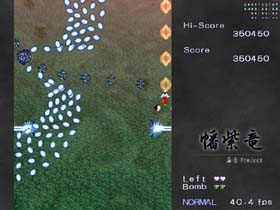
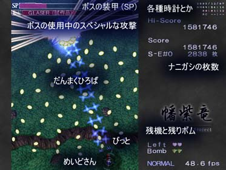
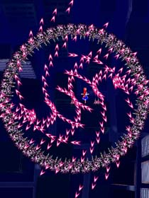
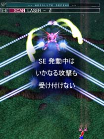

| [ top ] [ back ] [ next ] |
| １３．ストーリー |
|

パワープラント・ＲｅｄＳｔｏｒｍ 火星探索において、局所的・短時間に発生する嵐の中心部で発見された鉱石を用いて行うエネルギー発生装置。鉱石自体を地球に持ち込もうとすると何故か制御が失敗するため火星にて応用しやすいエネルギーに変換、地表に転送している。現在はまだ試験段階。 クリーンで効率的な新エネルギーの開発。 技術が進めば、その技術を最高に活かすためにとより高いエネルギーを欲する。 かつて、技術面において高い評価を得た発明家・エーリッヒの名はＲｅｄＳｔｏｒｍの発見によってさらに高みを見いだしたかのように…思えた。 半年間、安定を見せていたRedStorm。 しかしある日、何の前触れもなく暴走を始めた。 RedStormの暴走は、RedStormを用いた全ての機械を暴走させる 結果となった…ただの一つの例外を除いて。 「VIVIT-r、待機状態を解除。システム、異常なし。 …はい、ご主人様。私は問題なしですよ。今度は何の御用ですか？ …はい、了解しました。直ちに向かいます。」 一方、RedStormの暴走が起こってから、巫女の比良乃は叫び声が聞こえるようになった。 「た す け て………！」 「…火星に囚われているようね。眠らせてあげないと…。 RedStormの暴走と関係があるかもしれない。 エーリッヒ博士に会いに行きましょう。」 そして、物語の始まりの地へ。 |
| １４．画面説明 |
|
・ゲーム画面の構成は以下のようになっています。 ・敵弾が多くて速い，いっぱいいっぱいなシューティングです． ・弾幕美よりむしろ，熱い特殊攻撃に重きを置いています 
|
| １５．モード切り替え |
|
・自機の状態には２種類あり，それぞれ次のような特徴があります 【 テクニカルモード (SHIFT解放) 】 ・前方に攻撃を重視．前方に対してはかなりの威力を発揮． ・主に堅い敵の撃破，および高速弾の回避に使用する 【 オートモード (SHIFT移動中) 】 ・敵自動追尾．テクニカルの弱点を補うが速度が削られる． ・カスり判定が非常に大きくなる． |
| １６．アイテム |
|

・敵を倒したときに以下の条件を満たしていると得点アイテムが出現します 【自機の近くで倒した】 ・この場合、アイテムは自動回収されます 【自機より下で倒した】 ・アイテムは上に飛んだ後、落下します ・アイテムが落下中に敵弾にカスると自動回収できます ・アイテムを発生させてゆくと、アイテムのランクが上がってゆきます ・アイテムを１つでも落とすと、ランクは最低値になります ・ステージクリア後にアイテムのランクはリセットされます |
| １７．Ｓ.Ｅ (Special Equipment) |
|
・"ボス" および "中ボス" は一定の条件を満たすと S.E を使用してきます ・S.E 中は，ＳＰゲージの下に S.E ゲージが出現します．これは S.E の残り時間を示しています  ・ショットが当たった分だけ，装甲タイルを剥がすことができます．この枚数x100がS.E終了時にボーナスとして入ります
・ショットが当たった分だけ，装甲タイルを剥がすことができます．この枚数x100がS.E終了時にボーナスとして入ります・複数の S.E が発動しているときは，各S.Eごとに装甲タイルが剥がせます ・S.E 中に剥がした枚数に応じて，S.E 終了時にボーナスが入ります  【 通常Ｓ.Ｅ 】 ・攻撃が激化したり，奇怪な特殊攻撃を行ってきます  【 最終Ｓ.Ｅ 】
【 最終Ｓ.Ｅ 】・ＳＰが０になったときに発動するＳＥです ・ボスに十分な撃ち込みを行わないと，逃げられます |
[ top ] [ back ] [ next ] |